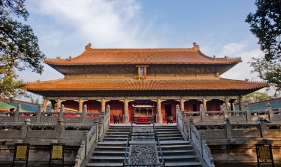

- 好客山东欢迎您！

• 山东是中华民族古老文明发祥地之一，其历史可以追溯到四五十万年前的“沂源人”。新石器时代早、中期的北辛文化，距今有8000年左右。举世闻名的原始社会末期的大汶口文化、龙山文化都是在山东首先发现的。自夏朝开始，山东进入奴隶制社会。商朝建立前后，山东一直是商族活动的中心。西周时期，封邦建国，齐、鲁两国成为周王朝的两大支柱，经济、文化取得更快发展，对以后山东地方历史的发展有着重大影响。
• 山东是儒家文化的发源地，孔子、孟子等儒家先贤的思想、理论、智慧和学术成就，构成了中国传统文化的重要内容。儒家文化以孔子为代表，强调仁、义、礼、智、信等价值观念，这些价值观念至今仍深深影响着山东人民的行为准则和道德规范。
• 山东的民俗文化多姿多彩，包括潍坊风筝、杨家埠年画、高密剪纸、聂家庄泥塑等民间艺术。还有曲阜孔子文化节、济南泉水文化周、泰山东岳庙会等传统节日活动，这些民俗文化和传统节日活动不仅丰富了山东人民的精神文化生活，也展示了山东独特的文化魅力和地域特色。
• 山东拥有丰富的非物质文化遗产，如山东快书、胶东大鼓、山东大鼓和山东琴书等传统曲艺形式，以及鲁绣等民间工艺。 这些非物质文化遗产是山东人民智慧和创造力的结晶，也是中华民族文化宝库中的瑰宝。
• 在文物保护与传承方面，山东一直走在前列。目前，山东省级文物保护单位总数已达1968处，数量居全国第一位。同时，山东还积极组织编写中华优秀传统文化教材，并在全国率先实现大中小学开设《中华优秀传统文化》课程，让传统文化融入生活，深入人心。